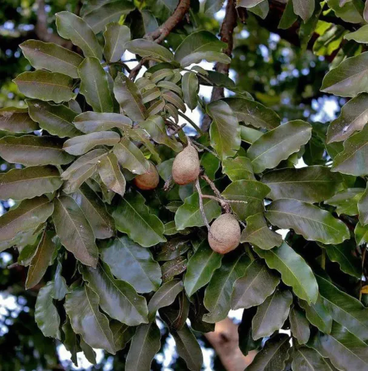
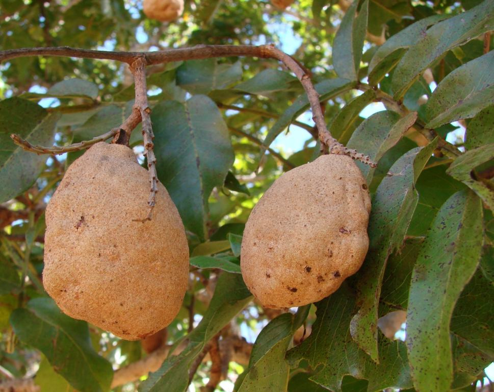
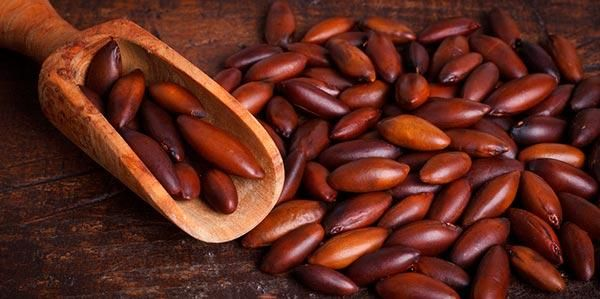
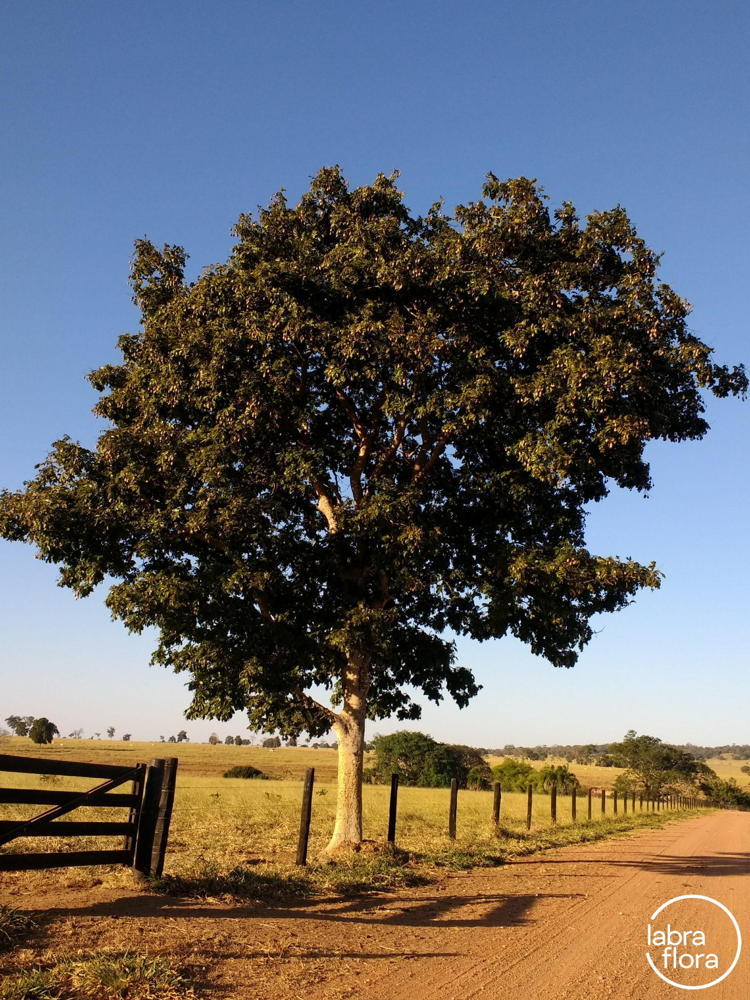

Baru
Dipteryx alata é uma árvore da família das leguminosas (Fabaceae), nativa do Brasil, porém não endêmica. Nomes populares: coco-pereba, coco-barata, baru, barujo, bugueiro, cambaru, castanha-de-bugre, castanha-de-burro, coco-feijão, cumari, cumaru, cumarurana, cumbaru, feijão-baru, feijão-coco, imburana-brava e pau-cumaru.
As sementes são uma iguaria cada vez mais apreciada e muito nutritiva, embora a dureza do fruto dificulte sua obtenção. Animais silvestres e o gado consomem a polpa aromática do fruto, assim como seres humanos, in natura ou como geléia. O primeiro equipamento para facilitar a abertura do fruto foi construído por Gilmar Moreira, técnico da Emater GO em Fazenda Nova, por volta do ano de 1993. Era constituido por uma foice adaptada em um pedaço de vigota, conforme publicação no Suplemento do Campo do Jornal " O Popular " à época.
Características
A árvore, de até 25 metros de altura com tronco podendo atingir 70 cm de diâmetro, possui copa densa e arredondada. Sua madeira é resistente
Folhas compostas por 6 a 12 folíolos, glabras, de coloração verde intensa.
Flores pequenas, de coloração esverdeada que surgem de outubro a janeiro. Floresce de outubro a janeiro. O fruto (baru) é um legume lenhoso, castanho com uma única amêndoa comestível, que amadurece de setembro a outubro.
Ecologia
O baruzeiro é nativo da vegetação do cerrado brasileiro e das faixas de transição da Mata Atlântica para o cerrado (na floresta latifoliada semidecidual). Ocorre nos estados de Minas Gerais (Norte, Noroeste, Triângulo Mineiro), São Paulo (norte do estado), Mato Grosso, Mato Grosso do Sul e Goiás. Ocorre também na Bolívia, Paraguai e Peru. A árvore é perenifólia, heliófita, de terrenos secos. Sua dispersão é irregular. Está ameaçada de extinção devido a: destruição de seu bioma nativo, ocupado pela expansão agrícola; corte devido a sua excelente madeira; consumo de suas sementes na alimentação e como medicinal.
Usos
O gosto da amêndoa do baru, parecido com o do amendoim, leva a população da região a atribuir-lhe propriedades afrodisíacas: diz-se que, na época do baru, aumenta o número de mulheres que engravidam. O que já se sabe é que o baru tem um alto valor nutricional. A castanha tem em torno de 23% de proteína, valor maior do que a castanha-de-caju e a castanha-do-pará.
A semente pode ser armazenada em um saco de aniagem, em ambiente fechado, por um período de um ano, sem nenhum dano para a qualidade da amêndoa. Fora do coco, as amêndoas também podem ser conservadas pelo mesmo período, desde que sejam guardadas em sacos plásticos dentro do freezer.
O preparo das amêndoas para consumo é simples. Depois de tiradas da polpa, podem ser consumidas "in natura" ou torradas, retirando-se a pele, como o amendoim torrado. Podem ser consumidas sozinhas ou usadas no preparo de pé-de-moleque, rapadura, paçoca, brevidades, bolos, pudim...
O óleo extraído da amêndoa é de excelente qualidade, e costuma ser utilizado pela população local como aromatizante para o fumo e como anti-reumático. Apesar de todas as suas qualidades, o baru ainda não é muito comercializado, sendo raro encontrá-lo nas feiras de cidades do Sudeste. É comum, contudo, em feiras-livres e lojas de produtos naturais de Goiás, do Noroeste e Norte de Minas Gerais e do Distrito Federal.
As qualidades do baruzeiro vêm sendo pesquisadas desde o fim dos anos 1980 pela Embrapa e suas propriedades o tornam uma planta relevante. O baruzeiro, por ser uma árvore de crescimento rápido e pela qualidade e resistência de sua madeira, é uma planta de bastante interesse e indicada para as empresas de reflorestamento. Em junho de 2020 foi informado pelo Governo Federal que o "Brasil exportará castanha de baru para a Coreia do Sul. Seu crescente comércio virou fonte de renda para pequenos agricultores de Goiás e Tocantins, especialmente"